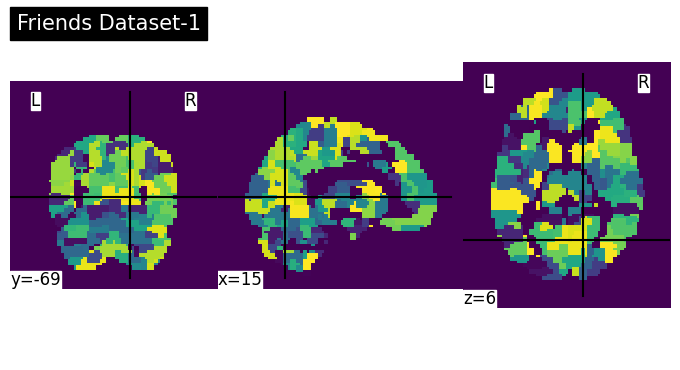

Datasets and tools
I would like to learn the following skills including:
Tools
nilearntorch.geometricDocker(just playing with it to see how it works on Colab)
Dataset
IUGM-preprocessed data- Two Examples:
  ### Methods - Graph Signal Processing - Graph Neural Networks - ChebNet
### Methods - Graph Signal Processing - Graph Neural Networks - ChebNet